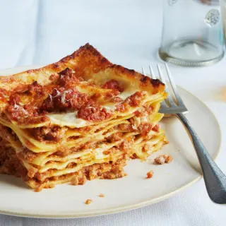

Home
Recipe for lasagna

Description
In this classic lasagna recipe, sheets of pasta are layered with a cheesy filling, a rich meaty tomato sauce, and more cheese and then baked until bubbly and browned.
Cheese Filling: For this classic lasagna recipe, the cheese filling has ricotta and parmesan with seasonings. You can make homemade ricotta cheese or replace it with cottage cheese.
Meat: I use both Italian sausage and ground beef for great flavor. If using all beef, add ¼ teaspoon of fennel seeds and some Italian seasoning to the meat mixture for flavor, or make my homemade Italian sausage.
Sauce: To keep this sauce quick, I use pasta sauce or marinara sauce (it’s easy to make from scratch with crushed tomatoes and canned tomatoes if you’d prefer). If using store-bought sauce, I love Rao’s for flavor.
Ingredients
- 2 olive oil
- 750g lean beef mince
- 90g pack prosciutto
- 800g passata or half our basic tomato sauce
- 200ml hot beef stock
- nutmeg
- 300g fresh lasagne sheets
- white sauce
- 125g ball mozzarella
Steps
- To make the meat sauce, heat 2 tbsp olive oil in a frying pan and cook 750g lean beef mince in two batches for about 10 mins until browned all over.
- Finely chop 4 slices of prosciutto from a 90g pack, then stir through the meat mixture.
- Pour over 800g passata or half our basic tomato sauce recipe and 200ml hot beef stock. Add a little grated nutmeg, then season.
- Bring up to the boil, then simmer for 30 mins until the sauce looks rich.
- Heat the oven to 180C/160C fan/gas 4 and lightly oil an ovenproof dish (about 30 x 20cm).
- Spoon one third of the meat sauce into the dish, then cover with some fresh lasagne sheets from a 300g pack. Drizzle over roughly 130g ready-made or homemade white sauce.
- Repeat until you have three layers of pasta. Cover with the remaining 390g white sauce, making sure you can’t see any pasta poking through.
- Scatter 125g torn mozzarella over the top.
- Arrange the rest of the prosciutto on top. Bake for 45 mins until the top is bubbling and lightly browned.